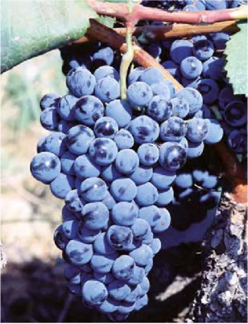

Chapter 3 · The Portuguese grape varieties
Alicante Bouschet (R) / Garnacha Tintorera
Origin:
This variety was obtained by Louis and Henri Bouschet in 1855 at Mauguio (Hérault) by crossbreeding Grenache with Petit Bouschet (Aramon X Teinturier du Cher) and introduced in Portugal at the end of the 19th century by English immigrants in the Alentejo.
Wine description:
The wines have herbaceous and red fruit aromas, reminiscent of ripe plum jam. An aromatic variety, with flavours of berries, cocoa and olives. When barrel-aged, notes of cocoa, dark chocolate and exotic spices stand out, while aromas of leather, game and balsamic notes may also develop.

Regional classification:
listed in the catalogues of Member States of the European
Union: France, Bulgaria, Cyprus, Spain, Greece, Italy and Portugal.
Morphology:
Young shoot (form of tip): Open, with a high density of prostrate hairs and a piping anthocynanin colouration,
Young leaf: Green with coppery areas, high density of prostrate hairs on lower side of blade.
Shoot: Has red-striped internodes.
Flowering: hermaphrodite
Mature leaf: Of medium size, orbicular, sub-trilobate; limbus dark green, revolute, with blistering. weak; medium density of prostrate hairs on lower side of blade; medium, straight teeth; petiolar sinus. Petiolar sinus slightly open, with a V-shaped base, and upper lateral sinuses open in a V-shape.
Berry: rounded, medium-sized, blue-black pulp
Woody shoot: streaked with red and slightly reddish buds.
Seed: Yellowish-brown
Phenology:
Bud burst: 4 days after Chasselas.
Flowering: Early, 2 days after Castelão
Veraison: Mid-season, 2 days before Castelão
Grape maturity: Late, two weeks after the Castelão
Vegetative and agronomic potential:
This variety is quite vigorous but must be short pruned because it tends to become depleted. It is also quite sensitive to wind. The variety is quite susceptible to downy mildew, phomopsis, flavescence dorée and to bacterial necrosis. It is also susceptible to wood diseases. This teinturier variety in France is essentially used for its colour input. Because of the higher heliothermic conditions in Portugal, it is able to produce high quality wine. There are 5 French clones available, no clonal selections in Portugal are homologated.

Oenology:
Wines obtained in France have a good body, are often flat and are lacking finesse and elegance. Warm areas of Portugal and Spain are suitable for the production of quality wine.
(Source: Folha informativa da INIAV Dois Portos))